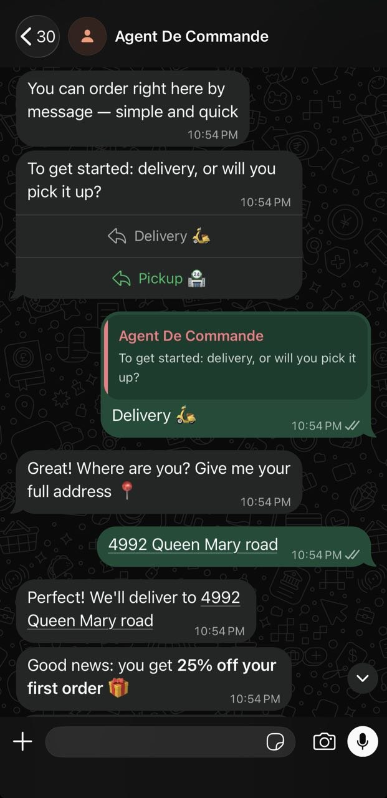

You know the number. Somewhere between 15% and 30% of every order placed through a delivery platform leaves your account before you ever see the money. It isn't a rumour — it's in the terms of service, and it's deducted automatically.
A restaurant generating $10,000 in online orders per month hands between $1,500 and $3,000 a month to a platform. That's $18,000 to $36,000 a year. No room to negotiate, nothing extra in return, and no difference whatsoever to the experience you give your customers.
We run restaurants. We've lived this math. And we built something to stop it.
The problem isn't delivery — it's the middleman
Platforms did provide a real service: they put restaurants online back when building an ordering system cost a fortune. That era is over.
Today the infrastructure exists to take orders directly — no app to download, no account to create, no service fees tacked onto your customer's bill. And without handing 30% of your margin to someone who neither cooked nor delivered anything.
What platforms sell is visibility and convenience. But your regulars — the ones who order twice a week, who already know your menu — don't need a platform to find you. They need a simple way to order directly from you.
WhatsApp is already on their phone
That's the starting point of what we built: WhatsApp is the most widely used messaging app in the world. Your customers already have it. They use it every day. Nothing to install, nothing to learn.
An AI agent connected to your WhatsApp Business number takes orders, asks the questions it needs to (quantity, options, delivery address or pickup), calculates the total, confirms the order and triggers payment — all in a natural conversation, with no involvement from your team.

The customer sends a message. The agent replies within seconds. The order lands in your kitchen. You keep 100% of the amount.
This isn't a marketing promise. It's a system we put in place for our own restaurants before rolling it out to anyone else.
What it changes in practice
For your margin: the commission disappears. On $5,000 of direct orders a month, that's $750 to $1,500 staying in your account instead of going elsewhere.
For your customer: the experience is simpler than an app. One message, one reply, one confirmation. No account, no password, no service fee revealed at the last step that kills the order.
For your team: the agent handles order-taking. Your staff do what only humans can — cook, welcome people, handle the unexpected. Not answer the same message about hours and menu options twenty times a night.
Your regulars don't need a platform to find you. You're paying commission on people who already know you.
What integration involves
We don't sell self-serve software you configure alone on a Sunday night. We install a system that works in your context — your menu, your rules, your opening hours, your payment process.
It takes two to four weeks depending on how complex your menu is and what tools you already use. You see the system running on a real case before it's switched on everywhere. Nothing goes live until you've validated the result.
Platforms stay available if you choose to keep them for acquiring new customers. The WhatsApp system handles your existing ones — the customers you've been paying commission on for months with no good reason.
The math before you call
Take last month's online orders. Apply 20% — a conservative estimate of combined commissions if you use more than one platform. That amount is what you recover every month with a direct ordering channel.
If that number beats the integration cost in the first month, the conversation is worth having.
A 20-minute call is enough to tell whether your situation fits. Teza Solutions builds AI agents for businesses that want what repeats to run without intervention — order-taking is one of those things. Book a call with us to talk it through.